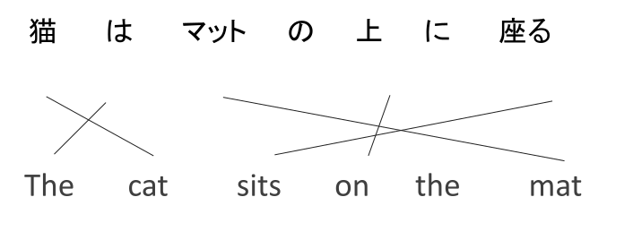

Multilinguality
John P. McCrae - University of Galway
Course at ESSLLI 2024

Machine Translation
History of Machine Translation
- 1954 Georgetown-IBM experiment
- 1966 ALPAC report
- 1970s-1980s: Rule-based MT
- 1993 Statistical MT (IBM/Brown)
- 2000s: Statistical MT (Och/Koehn)
- 2014 Neural MT (Google)
Machine Translation
Market dominated by Google, Microsoft, Amazon
Open-source alternatives: Moses, Marian, OpenNMT
Some special-purpose systems: Apertium, Joshua
Computer-Aided Translation
- Translation Memory
- Translation suggestions
- Quality estimation
- Post-editing
Bilingual Communication
- Translation
- Interpreting
- Multilingual communication
Still very challenging
Why is MT so hard?
- Translation depends on context
- "Black Eye" is "blaues Auge" (blue eye) in German and "ojo morado" (violet eye ) in Spanish
- Subtle difference matter
- "value" can mean "worth", "price" or "importance" in different contexts
Reordering
Reordering
Long-distance dependencies
- English: I saw the movie and it was great!
- German: Ich sah den Film und er (he) was prima!
- Spanish: Vi la película y ella (she) fue súper!
Semantic issues
- John liked Michael, so heJOHN helped himMICHAEL
- John liked Michael, as heMICHAEL helped himJOHN
Missing Information in Translation
- English: "Cousin"
- German: "Vetter" (male) / "Cousine" (female)
- Chinese:
| 堂兄 / 堂哥 | elder | father's brother's son | 表兄 / 表哥 | elder | mother's sibling's or father's sister's son |
| 堂弟 | younger | father's brother's son | 表弟 | younger | mother's sibling's or father's sister's son |
| 堂姐 / 堂姊 | elder | father's brother's daughter | 表姐 / 表姊 | elder | mother's sibling's or father's sister's daughter |
| 堂妹 | younger | father's brother's daughter | 表妹 | younger | mother's sibling's or father's sister's daughter |
Buzz Group
Why is translation hard in your language?
Under-resourced Languages
- 7,000 languages world wide
- Google Translates supports ~100 languages
- Wikipedia exists for ~300 languages
- Even for those (e.g., Irish) translation is significantly worse
Phrase-based MT
Neural MT
Prompt-based MT
Under-resourced Languages
What is under-resourced?
Parallel Corpora
Transfer Learning
Translation-based Transfer Learning
Parameter-sharing Transfer Learning
Language Adapters
Source: Rathnayake et al., Adapter-based fine-tuning of pre-trained multilingual language models for code-mixed and code-switched text classificationCode-mixing and Language Identification
Code-mixing, switching
- Extremely common in multilingual communities, especially online (3.5% of all tweets)
- Code-mixing: Matrix language with insertions from other languages (often English)
- Code-switching: changing between languages
- Loanwords: words from other languages (understandable to speakers without knowledge of the other language)
Challenges for code-mixed language
- Lack of data; most text is from noisy sources
- Many combinations of languages
- How to apply monolingual trained models to code-mixed texts?
Methods for code-mixed language
- Supervised learning (from scratch)
- Divide-and-conquer
- Translate to matrix language
- Zero-shot approach
Hands-on: Language Identification
Distant Reading
Close vs Distance Reading
- Close reading is the traditional way of reading a text
- Distant reading uses computational methods to analyse canons of text
- Term attributed to Franco Moretti (2000)
"So far as the engines of history are concerned, meaning does not matter. In principle, one could study the history of a literary tradition without reading any of literature. ... the main virtue of the computerized content analysis methods I use is that they save one from actually having to read the literature" - Martindale
"The Great Unread"
- Thousands of books published in 19th century England
- Only a few studied now by famous authors
- Computational techniques can reveal trends
- Titles became shorter
- Text became less abstract
Analysis methods for Distant Reading - Diachronic Frequency Analysis
 Source: Figure 1.4.1 – The Atlantic’s “The Language of the State of the Union” © Benjamin Schmidt, Mitch Fraa, Chris Barna, Libby Bawcombe, Noah Gordon, Betsy Ebersole, Jennie Rothenberg Gritz
Source: Figure 1.4.1 – The Atlantic’s “The Language of the State of the Union” © Benjamin Schmidt, Mitch Fraa, Chris Barna, Libby Bawcombe, Noah Gordon, Betsy Ebersole, Jennie Rothenberg Gritz Analysis methods for Distant Reading - Lexical Diversity
 Source: Matt Daniels
Source: Matt DanielsAnalysis methods for Distant Reading - Topic Modelling

Narrative Analysis
- Content (topics, characters, events, ...)
- Structure (plot, character relationsships, ...)
- Discourse (narrator, style, ...)
Approach: collect text, annotate, analyse
Summary
Summary
- Is machine translation solved?
- Still a challenge for most of the world's languages
- Next billion internet users will speak even more languages
Thank you for attending the course!
Feel free to contact me at john@mccr.ae if you have any questions
Back